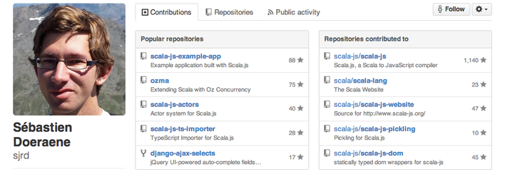
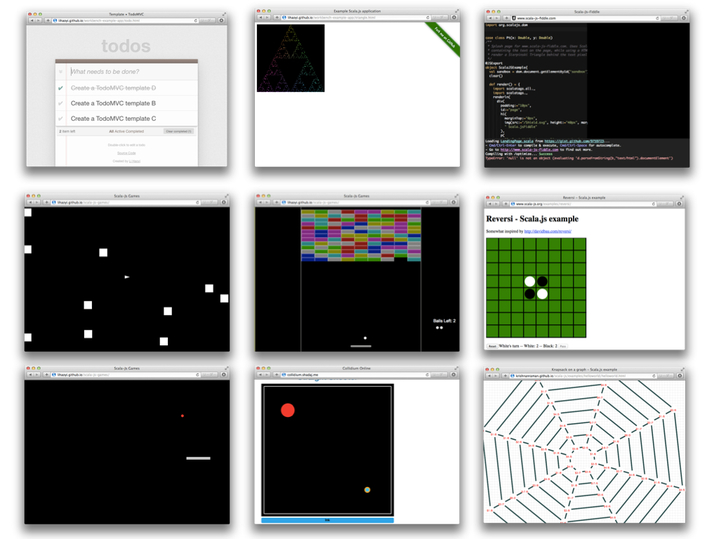
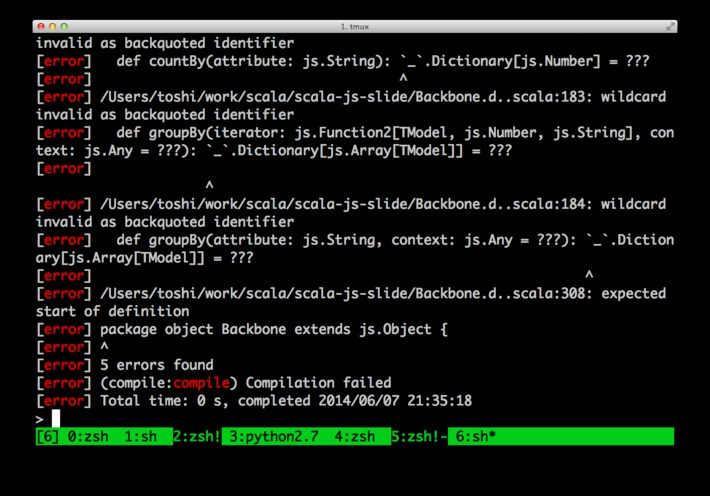
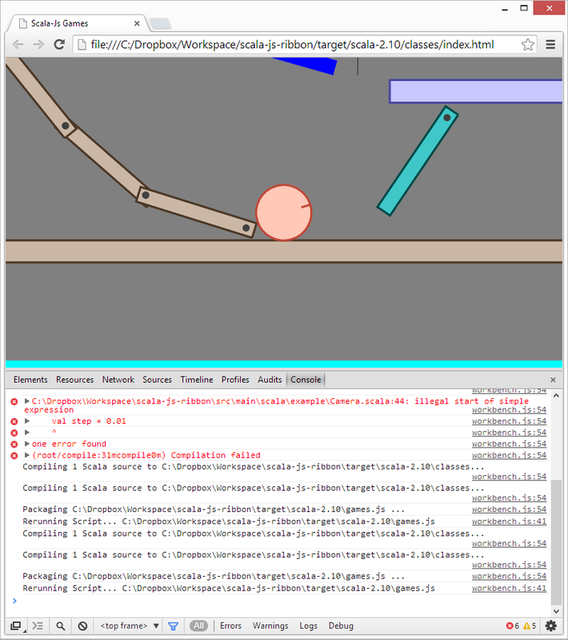

あなたは、Javascript で開発をしようと思って一歩を踏み出したけれど、
まだできていないという状況ではありませんか？
もしかして、
・・・このような悩みをお持ちではないでしょうか？
このウェブサイトは、これらのお悩みをお持ちのあなたのために作りました。
Scala を JavaScript に変換するツールがあったら、今すぐ欲しい！とあなたがお思いなら、
この先を読む必要はありません。
こちらからお申し込みいただき、このサイトを読む時間を実装にあててください。
さて、
このような理由で実装が遅れているなら、
あなたは機会損失という大きなリスクを背負っています。
もしかしたら
あなたがこれから出そうとしているサービスを
ライバルが先に出してしまうかもしれません。
もしかしたら
もたもたしているうちに流行が去ってしまって
やっとリリースしても売れなくなってしまうかもしれません。
もしかしたら
あなたの売りたいサービスの需要がなくなり、作るためにかけた時間が
まるまる無駄になってしまうかもしれません。
このような不安を持ったままで、「でも、今は時間がとれないから・・・」と後回しにしていたら、
不安が現実になってしまう可能性があります。
しかし、ご安心ください。
私がこれからご提案する Scala.js は、
自分の実装スタイルはクソコード量産ではありません。
メンテナンスのしやすさを最大限に考慮した作りを心がけています。
ですから、AltJS を選ぶときは、やはり型安全が一番重要になります。
どんなに使い方がわかりやすくても、型安全でないと
満足のいく実装に改造するのに結局手間もかかるので、正直いじる気にもなりません。
「Scala.js」は、自分の好きなタイプの AltJS ですね。
シンプルで、スッキリしている。
見た瞬間に「これはイイ！」と感じました。「惚れた」に近いかもしれません（笑）。
こうなると、理屈とかはもう関係ないです（笑）。
一度好きになってしまえば、嬉々として勝手にカスタマイズし始めます。
車好きな人が自分の愛車にするようにですね（笑）
しかし、カスタマイズするには、今までと違った操作になる訳ですから、
通常は慣れが必要です。
今回も使用感はどうなのだろうかと思いましたが、ドキュメントは scala-js.org
にまとめられているので、
メモ帳で開いて Scala ファイルを変えたら、簡単に JavaScript を変更することができました。
出来上がりイメージは予め Scala-Js-Fiddle で確認できますし、
これならJavaScriptに詳しくない人でもすぐに慣れることができそうです。
そんなわけで、自分のプロジェクトでも早速 Scala.js を使わせてもらってます。
また、Playframework で Scala.js を使用するサンプル
も公開されていますし、Skinny framework は Scala.js をサポート
しているのでTPOに合わせてフレームワークを選ぶことができます。
どんな仕様でも Scala.js で対応できるので、
すでに慣れて重宝することでしょう。
EPFL の方々には、素敵な AltJS を作っていただき、感謝しています。
「Scala.js」は、こんなに簡単に操作できます。以下の動画をご覧ください。
Live Coding ScalaJS, SF Scala 28 Feb 2014 from Li Haoyi on Vimeo.
こんにちは、Scala ちゃんです。
今回、「Scala.js」を使用させて頂くことになりました。 JavaScript には今や AltJS が不可欠です。
ブラウザだけでなくサーバーやクライアントアプリまでもが JavaScript で作れる時代となり、
AltJS が活躍する分野はさらに拡大する一方です。
プログラマとしては、ニーズの高い AltJS を扱うことも当然ながら、
最終的には、型安全な Scala.js が必要になってきます。
近年、特に、2013年06月あたりから、
Scala.js は謎の最適化に更に力を入れています。
ビルドにかかる時間は当初の数分の1、生成される JavaScript のサイズはなんと数十分の1になっています。
インターネットで多角的にビジネス展開するためには、
様々なシーンでプロっぽいサイトが作れる「Scala.js」は最強の武器となるでしょう。
ソシャゲに、SNS、広告配信、情報起業やアフィリエイトなどのインターネットビジネス。
この Scala.js は、まさに、ステージを選びません。
「でも、Scala は苦手・・・。自分には無理でしょう？」と難しく感じる方も多いでしょう。
しかし、コツを掴んでくれば、JavaScript では考えれなかった安心感を得られる訳です。
実装できる可能性が無限に広がり、自分のパソコンひとつで多角的な検証や試行錯誤も可能になります。
ぜひ、インターネットを使ったあらゆるビジネスシーンで、
Scala.jsを使い倒して、大きな収益を上げて頂ければと思います。
はじめまして！
Sebastien Doeraeneです。
私たちはおよそ1年前から Scala.js を開発してきました。

Scala.js は 2013 年の ScalaDays でお披露目しました、
当時は Hello, World のために 16MB の JavaScript を吐き出していました。
ところが8月の pull-req でコードサイズが 1MB を切り。
だれかすごい人が頑張るとなんかすごいことになることがわかりました。
それから、さらに最適化を進めることで、
Scala.js を最強の AltJS してきました。
以下は、これまで Scala.js で開発されたアプリのほんの一部です。

私たちは、ご依頼主からご希望(pull-req)を詳しく聞いて、
ていねいに作り上げる完全オーダーメイドの開発をしています。
時間も手間もかかりますので、当然ながら楽ではありません。
そのため、ある程度、資金に余裕のある大学(EPFL)が私たちのお得意様となってくださっています。
Scala.js の重要性をよく知っている起業家さんたちは、
数々の yak shaving をしてまでも、Scala.js を使ってくださっています。
しかし、このような状況では、Scalaマッチョな人たちはどんどん豊かになっていくのに、
そうでない人は Scala.js を試す機会すらない・・・ということになってしまいます。
Scala.js を使った開発ができず、サービスをリリースできないという状況にある人が非常にたくさんいます。
このような悩みは、決してあなただけの悩みではありません。
私も、最初から Scala.js を開発していたわけではないので、
入り口でつまづいてしまっている人たちの気持ちがよくわかります。
Scala.js のプロとして、私たちがお手伝いできることはないだろうか？
JavaScript が壁になってサービス開発に踏み出せない人がたくさんいるなら、
その人たちを助けてあげられないだろうか？
・・・と考えました。
実際に作ってさしあげることはできなくても、
これまで私が Scala.js を使い、
積み上げてきたノウハウを提供することは可能なのではないか？
ノウハウだけであれば、このクソみたいな情報商材風サイトに落とし込むことで、
比較的わかりやすく提供することができるのではないか？
資金は豊富ではないけど、その分、自分でがんばれるという方なら、
Scala.jsを使いこなしていただくことで、速やかにリリースにこぎつけることができるでしょう。
・プロの Scala エンジニアが利益を生み出しているノウハウを、そのまま使うことができます
・Scala の文法に従ってプログラムを作成するだけで、プロは絶対作らないような JavaScript を生成することができます
さらに、この Scala.js には、他の AltJS にはない特長があります。
これは私が以前に Scala.js でスライドショーを作ったときのコードです。
なんと、100 行くらいでスライドショーが出来てしまいました。しかも型安全！
これを JavaScript で書いたら...ぞっとしますね！！ でももうそんな愚かなことを考える人はいないでしょう。
「Scala.js」にはすでに充実したライブラリがそろっています。
実践のコツを知りたい方は必見です。
JavaScript に変換されることです。
「なんだ、他と同じじゃないか？」と思われますか？
いいえ、大きな違いがあります。
というのは、「Scala.js」は、
「sbt-plugin」として作成されているからです。
sbt-plugin として提供されていますので、
addSbtPlugin("org.scala-lang.modules.scalajs" % "scalajs-sbt-plugin" % "0.4.4")
と sbt のプラグイン設定ファイルに書き加えるだけで導入できてしまいます。
そんな簡単にできるわけないだろうとお思いの方もいらっしゃると思いますが、これはれっきとした事実です。
コンパイルも
sbt compile packageJS optimizeJS
と打つだけです。
「Scala.js 使ったら jQuery とか使えないんでしょう？」ですか？そんなわけないじゃないですか。
JavaScript の関数は scala.scalajs.js.Dynamic.global 経由でサクッと呼び出せます。
よく「Scala.js を使って静的型付けにしても、すでに JavaScript のライブラリに対応できないから現場じゃ使えないよね」 とんでもない！
実は Scala.js は Typescript の d.ts のように、 既存の JavaScript ライブラリに型を与える仕組みが用意されている のです。
Scala.js の公式では DOM API と jQuery のための型ヒントのライブラリが配布されています。 これを使えば DOM API や jQuery も静的型付けになってしまいます。
さらに！その他のライブラリも、sjrd/scala-js-ts-importer を使えば Typescript の d.ts から Scala.js の型ヒントファイルが自動生成できてしまいます！ Typescript の資産にタダ乗りする形で病ましく思う方もいそうですが、ライバルに遅れをとらぬため、使わない手はありません。
実際に試してみましょう。そうですね、Backbone などいかがでしょう。

あっ！underscore.js の 「_」が Scala では型に使えないから...。
たまにこういうこともありますが、大した問題ではありません。
お気づきの方もいることでしょう。「Scala.js を使えばサーバーサイドもクライアントサイドも Scala でいけるのでは？」 その通りです！。
「サーバーサイドとクライアントサイドで言語を統一したいなら node.js あるのでは？私は node を使いますね」ですか？
そうですか。まあ無理をなさらずに。私ならどうしても node を書く必要があるのなら
scala-node をつかって
Scala.js で nodeモジュールを作りますね。
Scala は JavaScript に変換できるけれど、JavaScript は Scala に変換できない。従って Scala の勝ち です。
Scala.jsは、
リリース前の開発版の段階から使わせていただいていました。
実は過去に他の AltJS を使っていたのですが、
型がなかったり難しかったりしたので、困っていたんですが、
この Scala.js を使ったら自分のイメージした通りに作ることができたんです。
「Scala.js ってこんなに簡単に作れちゃうんだ！」
と感動した記憶があります。
私のような初心者でも、型安全できれいなコードが書けるのでオススメ！使い方は無限大ですよ★
今は 0.5.0 の開発中でさらにバージョンアップしているということなので、
また是非是非使わせていただきます！
Scala.js は、0.1 の時から活用させていただいています。
あまりに簡単で、すぐに出来上がってしまった自分のサービスを見て感動したのを覚えています。（笑）
今までの Scala.js もすごく使いやすかったですが
さらに、たくさんの機能が追加されてさらにバージョンアップしましたね。
現在、利用されている他の AltJS やツールなどは
意外と難しいものが多いので、なかなか手がでない方も多いと思いますが
このScala.jsは、そんな方でも手にしやすい易しさ。
実装が苦手な人にも嬉しいドキュメントサイトもあるところが
Scala.jsを最大限に活用してほしいという開発者さんの気持ちが伝わってきました。
Scala.js は様々なところで活用できる AltJS だと思います。
さて、「Scala.js」の価格について、お知らせしなければなりません。
この Scala.js は、
・Scala の JavaScript への変換
・JavaScript との相互運用
が可能となります。
これを自分で実装したら、何年かかるでしょうか？
どんなに短く見積もっても、10年は下らないのではないでしょうか。
Scala.js の開発者は専門教育を受けていますし、得意分野を極めるために、
時間もお金もふんだんに使ってきています。
さらに経験を積むことで、Scala.js の機能向上をもたらしています。
あなたに限りない利益をもたらすかもしれないこのScala.jsに、あなたはいくらの価値を付けますか？
10万円？ 50万円？ 100万円？…
金額に換算できない価値があるのではないでしょうか。
しかし、そのような高額で提供するのは、私たちの信念に反します。
あくまでも Scala.js の開発者は、資金が豊富になくても自分でがんばれる人に向けて、
この Scala.js を作成したからです。
そのため、JavaScript が壁になって一歩を踏み出せないあなたが、
手に取りやすい値段に設定させていただきます。
正直言って利益度外視ですので、いつまで販売できるかわかりません。
私たちの気が変わらないうちに、今すぐ手に入れることをお勧めします。
まだお悩みの優柔不断に決断してもらうため、とっておきの開発環境を紹介します。 lihaoyi/workbench です。
lihaoyi/workbench を使うと Chrome ブラウザと sbt を連携させることができます。コンパイルしたら自動でブラウザをリロードするなんて魔法を使ってみたくはありませんか？
さあ、もう迷いはありませんね！？
Scala.js とその周辺ライブラリを使うことで、
あなたの時間と労力が大幅に軽減できます。
サービスを開発したいあなたが時間を使うべきところは、サービスをよりよくするための努力をしたり、
あなたのサービスを利用してくださったお客様をフォローすることではないでしょうか。
JavaScript での実装に手間どって、大事な時間を無駄にするのは今日限りにしましょう。
「Scala.js」を導入すれば、あなたの時間と労力を大幅に軽減できます。
まだ、導入を迷っているあなたへ。
この手紙の冒頭でお話した鍵を、あなたに差し上げます。
こちらをダウンロードし、「Scala.js」の一部を完全無料でお試しください。
きっとご満足いただけることと思います。
ただし、このウェブサイトもいつまで公開できるかわかりませんので、
お早めに「Scala.js」を手に入れることをお勧めします。
JavaScript で実装した場合、型安全は保証されません。
また、CoffeeScript にした場合、も型安全にはならないでしょう。
賢明なあなたなら、この Scala.js にどれだけの価値があるかおわかりでしょう。
あなたの大切なお金と、かけがえのない時間を無駄にしないために、
今すぐ下のリンクをクリックして、私たちにお知らせください。